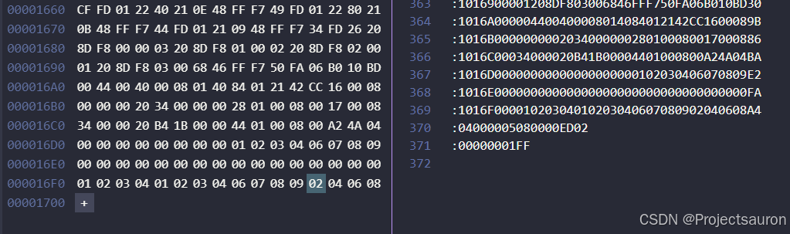

hex 文件和 bin 文件剖析
@toc
在单片机开发中，hex 文件和 bin 文件是非常常见的两种烧写文件格式。比如在 Keil 中，编译好程序后，点击 Download 就可以把 hex 文件烧录到板子上。
而有时候在我们实现 IAP 时，有需要生成 bin 文件格式，再将其传输到单片机中，通过 Bootloader 将 bin 接收移到相应地址。
哪这两个文件有什么区别？为什么有时候用 bin，而有时候用 hex？本文将针对这两个文件进行讨论。
一、概述
二进制文件（Binary File）是一种以二进制形式存储的计算机文件，其中的数据以字节为单位进行编码。二进制文件可以包含任意类型的数据，如图像、音频、视频、可执行文件等。与之相对的是文本文件，文本文件使用字符编码（如 ASCII 或 Unicode）表示数据。
十六进制文件（Hex File）是一种特殊的二进制文件，其中的数据以十六进制表示。每个十六进制数对应 4 个二进制位，因此可以更直观地查看和编辑二进制数据。十六进制文件常用于存储和传输机器码（即可执行文件），特别是在处理嵌入式系统中常见的固件或软件升级时。
更具体地说，*.bin 文件是二进制文件，是纯粹的 Flash 映像，不含任何额外信息；而 *.hex 是 Intex Hex 格式的映像文件，可理解为带存储地址描述格式的 bin 文件。
在 Keil 中，可以通过如下方式来生成 bin 和 hex 文件：
要生成 hex 比较简单，选中这个选项即可：
要生成 bin 文件需要借助 fromelf 工具：
指令为：
1 | fromelf --bin -o "$L@L.bin" "#L" |
注意，下面那种写法要写清楚自己的 bin 要放在哪个目录，以及 Keil 生成的 axf 所在的目录
二、hex 文件
hex 是 Intel 公司制定的一种使用 ASCII 文本记录机器码或常量数据的文件格式，这种文件常常用来记录将要存储到 ROM 中的数据，绝大多数下载器支持该格式。
一个 hex 文件由多条记录组成，而每条记录由五个部分组成，格式形如”: ll aaaa tt [dd…] cc“
这里用不同的颜色和空格只是为了方便区分位
解释如下：
- :：每条记录的开头都使用冒号来表示一条记录的开始
- ll：以 16 进制数表示这条记录的主体数据区的长度（即后面 [dd…] 的长度）
- aaaa：表示这条记录中的内容应存放到 Flash 中的起始地址
- tt：表示这条记录的类型，它包含中的各种类型，类型见下表：
| tt 的值 | 代表的类型 |
|---|---|
| 00 | 数据记录 |
| 01 | 本文件结束记录 |
| 02 | 扩展地址记录 |
| 04 | 扩展线性地址记录(表示后面的记录按个这地址递增) |
| 05 | 表示一个线性地址记录的起始(只适用于 ARM) |
- [dd…]：表示一个字节的数据，一条记录中可以有多个字节数据，ll 区表示了它有多少个字节的数据
- cc：表示本条记录的校验和（CheckSum），它是前面所有 16 进制数据（==除冒号外，两个为一组==）的和对 $256$ 取模运算的结果的补码
例：下面以一个 hex 文件的前两行来分析：
1 | :020000040800F2 |
首先看第一条记录：
- 02：表示这条记录数据区的长度为两字节
- 0000：表示这条记录要存储到 Flash 中地址为 0000 处
- 04：表示这是一条扩展线性地址记录
- 0800：由于这是一条扩展线性地址记录，所以这部分表示地址的高16位，与前面的”0000”结合在一起，表示要扩展的线性地址为”
0x0800 0000“，这正好是 STM32 内部 Flash 的首地址 (^人^) - F2：表示校验和，它的值为 $(0x02+0x00+0x00+0x04+0x08+0x00)%256$ 的值再取补码。
下面是第二条记录：
- 10：表示这条记录数据区的长度为十六字节
- 0000：表示这条记录要存储到 Flash 中地址为 0000 处
- 00：表示这是一条数据记录，数据区的是地址；
- E81B002091010008390B000885080008：要按地址存储的数据
- 52：校验和，计算方法同上
再往后看，第三、四行数据如下：
1 | :10001000350B0008410200084913000800000000E9 |
可以看到，从第二行开始，它们的地址都只相隔了 0x10。Hex 文件内大部分都是这种格式。
最后两行如下：
1 | :04000005080000ED02 |
首先看倒数第二行，数据类型是 05，表示起始线性地址记录，其实它表示的是一个函数入口地址，但是这个函数地址并不会影响实际烧写到 Flash 中的内容，我们可以不管它，MDK 官方的解释是大多数情况下可以忽略它。
而倒数第一行，就纯粹表示文件结尾，没有别的含义，所有的 hex 文件的结尾都可以是这个。
我们在做有 IAP 功能的项目时，有时需要把 Bootloader 和 APP 两段代码合并以后烧写，这样可以大大简化操作步骤，此时，可以把两个 hex 文件手动合并。
操作方法是，把其中一个 hex 文件最后的两行（开始线性地址记录、文件结束记录），也就是刚才提到的那两行删除，再把另一个 hex 文件的所有内容都复制到其后就可以了。
当然，两个文件的地址区不应该有重叠
到这里，hex 的一些基本内容就介绍完了。
三、bin 文件
相比于 hex 文件，bin 文件就简单多了。bin 文件保存了需要烧写的目标文件内容，是没有任何附加格式的原始二进制文件。bin 文件其实就是 hex 文件中的数据部分：
结尾：

有关 bin 文件的一些信息，我在 STM32 芯片启动过程 一位中做过一些介绍